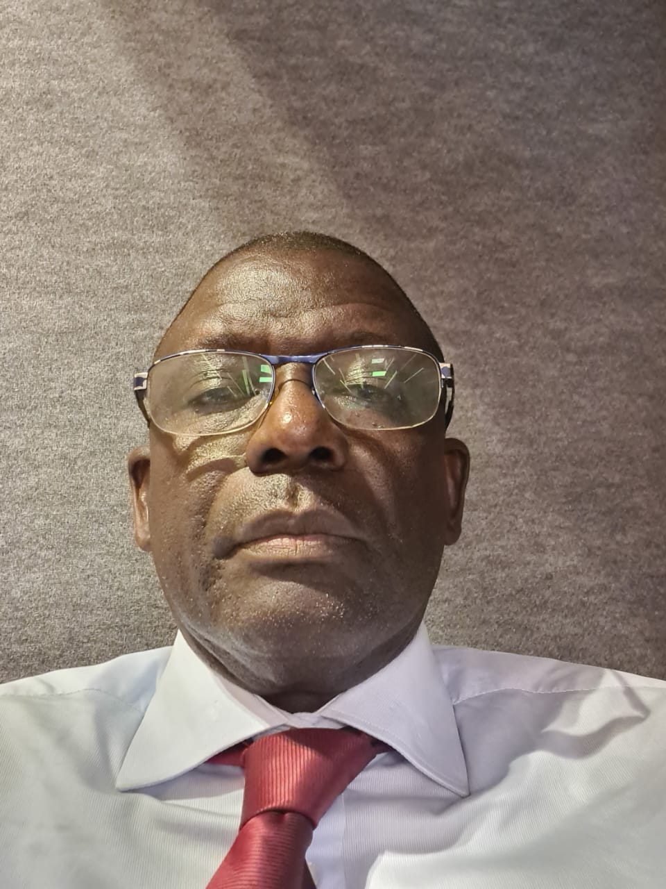

🌾
Agriculture
Production et transformation de produits agricoles.
GIE · Ndour Ndour · Mbadakhoune · Kaolack
Le GIE And Defar Sunu Gox rassemble les habitants de Ndour Ndour pour développer ensemble l’agriculture, l’élevage, la pêche et les services du village.
L’histoire du GIE And Defar Sunu Gox.
Le GIE And Defar Sunu Gox a été constitué le 19 septembre 2026 à Ndour Ndour, dans la commune de Mbadakhoune, conformément à la loi 84-37 du 11 mai 1984 sur les GIE au Sénégal et à l’acte uniforme OHADA. Sa durée est illimitée.
Il a été inscrit au RCCM le 30 septembre 2026 et a obtenu son NINEA le 1er octobre 2026. Le 3 octobre 2026, les membres se sont réunis pour lancer le plan d’action de la première année.
Notre ambition : offrir à la population un cadre où l’on peut aspirer au développement économique, social et culturel.

« Notre vision est claire : le développement de notre terroir ne se fera pas sans nous, et encore moins contre nous. »
Pendant trop longtemps, nous avons attendu que les solutions viennent d’ailleurs. Aujourd’hui, prenons notre destin en main.
Les bénéfices générés par notre GIE ne serviront pas qu’à enrichir la structure, ils seront réinvestis pour aider directement les villageois à être plus résilients.
Chers membres, chers villageois, chers partenaires,
C’est avec une immense fierté, mais surtout avec un sens aigu de notre responsabilité historique, que je m’adresse à vous aujourd’hui. La création officielle de notre Groupement d’Intérêt Économique (GIE) AND DEFAR SUNU GOX n’est pas une simple formalité administrative. C’est un acte de rupture, un manifeste d’indépendance et le point de départ d’une transformation profonde de notre village et, par extension, de toute notre commune. Cet acte fondateur marque le début d’une aventure collective prometteuse.
Notre vision est claire : le développement de notre terroir ne se fera pas sans nous, et encore moins contre nous.
Notre structure juridique est en place, mais un GIE n’est rien sans l’engagement de ses membres. Nos priorités immédiates sont claires : valoriser le savoir-faire de chaque membre au sein du groupe.
Pendant trop longtemps, nous avons attendu que les solutions viennent d’ailleurs. Aujourd’hui, prenons notre destin en main. Notre GIE s’inscrit dans une logique de co-construction et de souveraineté. Nous ne tendons plus la main : nous tendons les bras pour travailler et nous tendons l’esprit pour innover. Avec nos futurs collaborateurs, nous n’établirons que des partenariats gagnant-gagnant, fondés sur le respect mutuel et la création de valeur partagée.
Notre village regorge de potentialités humaines et matérielles. Nous avons diverses qualifications professionnelles avec une jeunesse courageuse et ambitieuse ; notre potentiel agricole et maraîcher est immense. Pourtant, le constat est là : la précarité persiste. Notre ambition est donc de réparer cette injustice en exploitant pleinement toutes ces potentialités pour bâtir un meilleur devenir pour notre village.
À travers la création du GIE nous voulons apporter une valeur ajoutée par des activités génératrices de revenus à travers l’achat, la commercialisation, la transformation de produits locaux. Les bénéfices générés par notre GIE ne serviront pas qu’à enrichir la structure, ils seront réinvestis pour aider directement les villageois à être plus résilients.
Concrètement, cette résilience communautaire se traduira par des actions directes et solidaires :
Ce GIE est le vôtre. Sa réussite dépendra de notre discipline, de notre solidarité et de notre rigueur. Le terrain est prêt, les ambitions sont nobles et la volonté est totale. Je sais pouvoir compter sur la détermination de chacun d’entre vous pour faire de ce GIE un modèle de réussite et un moteur de développement économique pour notre communauté.
J’appelle chacun d’entre vous – producteurs, jeunes, femmes, aînés, immigrés – à s’approprier cet outil. C’est ensemble, solidaires et rigoureux, que nous ferons de notre GIE AND DEFAR SUNU GOX notre fierté mais aussi le moteur du bien-être de notre village et par delà la commune.
Je nous souhaite une belle réussite guidée par la solidarité et l’altruisme.
Pour un village fort, digne et résilient : en avant avec AND DEFAR SUNU GOX !
Le Président
Onze domaines d’activité reconnus, regroupés en six familles.
Production et transformation de produits agricoles.
Production et transformation des produits de l’élevage.
Vente de produits halieutiques et mareyage.
Du matériel à la disposition des membres et des producteurs.
Des formations et un accompagnement pour la communauté.
Prestations de services.
Le GIE vient de naître. Voici les étapes déjà franchies.
Statuts et règlement intérieur adoptés à l’unanimité, bureau et commissaires aux comptes élus.
Le GIE obtient son immatriculation officielle.
Le groupement reçoit son identification nationale.
Vingt membres réunis à Loucky, plan d’action arrêté.
Les projets décidés par les membres lors de la réunion du 3 octobre 2026.
Transfert d’argent, crédit téléphonique et services de proximité pour les habitants.
Siège provisoire du GIE, en attendant des locaux définitifs.
Ouverture du compte du GIE au Crédit Mutuel du Sénégal.
Présenter le GIE, partager ses nouvelles et recevoir les demandes d’adhésion.
Registres, cachet et documents administratifs pour une gestion transparente.
Un espace d’échange et de réflexion administré par le bureau.
Le GIE est ouvert à toute personne qui accepte les statuts et le règlement intérieur et qui exerce dans l’un de ses domaines d’activité.
Paiement auprès du trésorier général, du 5 octobre au 25 décembre 2026.
Une question, une demande d’adhésion, une idée de partenariat ? Écrivez-nous ou passez au magasin villageois.